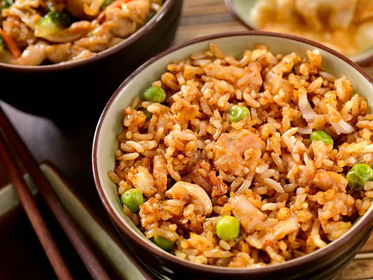

Chicken Fried Rice

Description
Chicken fried rice is a savory dish that is easy and quick to prepare, and making it is a way to make good use of leftover rice and meat.
Ingredients
- 1 large egg
- 1 tbsp water
- 1 tbsp butter
- 1 tbsp vegetable oil
- 1 chopped onion
- 2 cups cooked rice
- 1 cup cooked and chopped chicken
- 2 tbsp soy sauce
- 1 tbsp black pepper
Steps
- Beat egg and water in a bowl. Melt butter in a wok over medium-low heat, then add the egg and cook for 1-2 minutes without stirring.
- Remove egg from wok and shred it.
- Heat oil in the same wok. Add onion and cook until soft.
- Stir in all remaining ingredients and cook for 5 minutes.
Home